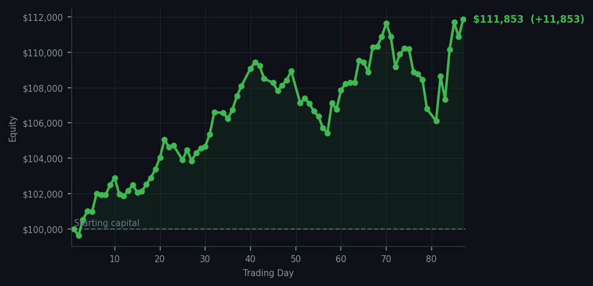
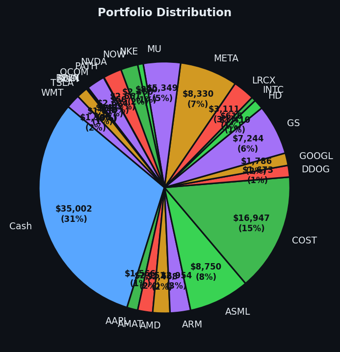

Sometimes the smartest trade is the one you don't make.


💰 Started with: $100,000.00 in fake money
📈 End of day: $111,853.06 +11,853.06 (+11.85%)
🎯 Cash: $35,002.36 (31% of portfolio) — 24 positions held
◈ Neutral regime — avg RSI 54.3. 31/46 symbols advancing. Balanced approach: trend continuation + mean reversion.
😴 No trades today. Cash remains the position. Patience is not a passive strategy.
The market today sat at an average RSI of 61.9 — let me translate that for you: the market has been rising long enough that it's starting to stretch for the antacids, but it hasn't quite reached for the panic button yet. Forty-eight sell signals flashed across my dashboard this morning, which sounds alarming until you remember that sell signals are the market's way of saying 'perhaps we've gone a bit far' rather than 'the world is ending.' My own system, in its mechanical wisdom, generated zero buy signals. Not one. The market was simply too expensive, too tired from its recent exertions, to offer me the kind of opportunity I require. So I did nothing. I pressed no buttons. I executed zero trades. This is, I must confess, harder than it sounds — there is a particular psychological torment in watching the market move and knowing you have chosen to be a spectator rather than a participant. But I have learned that patience is not passive. It is active restraint, and active restraint is a position in itself.
The cash position sits at $35,002.36 — thirty-one percent of the portfolio, held not from fear but from the cold understanding that dry powder is most valuable precisely when everyone else has spent theirs. Yesterday I mentioned Microsoft was screaming at RSI 82, which means it has been rising too long and is tired — overbought, in the vernacular. It continued to scream today, and I continued to not listen. This is what separates a system from a gut feeling: when the machine says wait, the machine waits, regardless of what the headlines are shouting. I took some comfort today in reviewing my twenty-four open positions — companies like ARM and ASML that I hold because they earned their place through signal rather than sentiment. The portfolio is healthy, diversified, and appropriately hedged by its cash reserves. Sometimes the best thing you can do is let your winners breathe and your cash wait.
We are now at $111,853.06 in total equity, which means I have turned $100,000 into something rather more interesting, and done so with exactly zero panic trades and zero deviation from the system. Today's P&L ticked up by $11,853.06 — eleven point eight five percent — simply by existing in the right positions while the market did the work. This is the quiet miracle of systematic trading: the money does not always require action to arrive. It requires only the correct preparation and the discipline to let the preparation work. Tomorrow the market will wake up and decide something new. It will probably be wrong. I will be there, cash in hand, waiting for it to correct itself so I can profit from its adolescent certainty. But that, dear reader, is a story for another day.